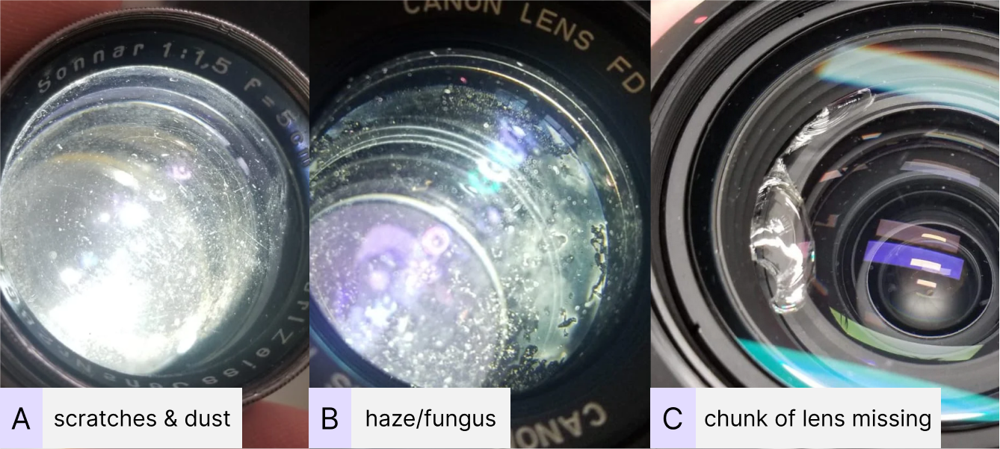

Dirty damanged lenses
January 16th, 2023
Bellevue, WA
Haze/fungus and scratches on my actual lenses.
The death knells of optical lenses
I've definitely not taken the best care of some of my photographic gear over time. Over the many years of moving, storage, and use, there has been many a battle scar on some of my equipment. One of the scariest things that can happen to a lens (especially an old lens) is when it starts to grow mold inside. There are other equally scary damage that also affect your lens such as haze, scratches, and "dust". But lets take a step back and break down a few terms and concepts.
| Problem | Cause | Notes |
|---|---|---|
| Mold/Fungus | Microscopic organisms in the air settle on dark and humid lens elements. They grow as they break down the lens coatings. | I'm not sure if there are ways to get rid of mold once it has taken root on your lens beyond a full dissasembly and chemical cleaning. |
| Haze/Oil | Haze or oil appear from 2 places in your lens. The first is the oil from the mechanical aperture blades run on to your lens elements. The second is the optical glue or lubricants used in lens assembly break down and coat your lens. | 2 primary effects of haze, localized haze which is more spotty and overall haze with is a semi-opaque layer over an area of the lens. |
| Scratches | Preety self-explanatory, when sharp or edgy things rub against the lens elements, can lead to scratching and even taking a chunk out of the glass. | Somebody explain to me how internal scratching happens? Dust particles? It's not unheard of, but more rare. |
| Dust/particles | This is espeically common with zoom lenses where the movement of the lens barrel can create vacuums that suck in dust and particles. | One more rare case for particles is paint or other coatings internal to the lens breaking down inside the lens. |
.. or is it?
That was a lot of scary stuff. All the things that make up the nightmares of photographers and camera collectors everywhere. I do own a few lenses that have mold and a few of my older lenses even have scratches. But how much of that really affects the usage of these lenses? The answer is not very much effect. The people over at The Kamera Store have been working on reparing, cleaning, and selling camera gear for a while, and they know a thing or two about damaged lenses. I've recently read an article they published about Does a Dirty Lens Affect Image Quality? Fungus, Scratches, Haze & More! (from January 24, 2022) as a not super-scientific, but pretty fun exploration of the quality of photos you get from various level of dirty damanaged lenses.
Results you can see
The author Connor Brustofski took a set of dirty damaged lenses and used them to take some everyday photos. The idea was to see how these damanged lenses would preform across a number of subjects. Here is just a small sample of the tests that he had conducted.
Image from the Kamera Store blog Take a look at these images, what kind of lens do you think they used?Answers below!
- Image 1 has a lot of chromatica aborrations (purple fringing) going on, a bit lowered contrast and sharpness.
- Image 2 is strangly fine, not really problems at all.
- Image 3 has a lot of lens flare and loss of contrast.

Image from the Kamera Store blog Here are some of the lenses that they tested out.
There are many more examples like this on that blog post. The idea is that even with some pretty extreme damage, the image that the lenses makes are "ok". In a lot of cases there is a loss of contrast, lowered sharpness, and sometimes large particles or fungus might cause some shadows to show up on your film/sensor. In most cases if you are not shooting something "professionally"/commercially, then it'll make an image you can correct later on.
But this doesn't mean that you should buy damaged lenses as a cost saving measure. If you have a dirty or damanged lens, keep using it if it still works. But if you had to buy a new (to you) lens, buy one as good condition as you can. The main concern is to get as good condition as you can to avoid the eventual complete failure of a lens.
In conclusion
- If you have a dirty damaged lens, clean it best you can and keep using it. Know that the image quality will have some limitations.
- If you are buying a lens, buy one in the best condition you can. This will give you less to worry about over the life of that lens.
Answers
- Image 1 = Lens A
- Image 2 = Lens C
- Image 3 = Lens B
Sources
- Does a Dirty Lens Affect Image Quality? Fungus, Scratches, Haze & More! written by Connor Brustofski over a the Kamera store.